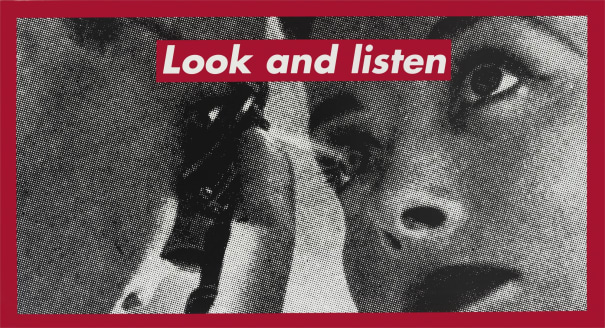

- Jenny Holzer
- Robin F. Williams
- Barbara Kruger
Barbara Kruger란 누구인가?
Robin F.Williamsholds a BFA from the Rhode Island School of Design, Providence, Rhode Island.She has been exhibited at galleries including Bard College at Simon’s Rock, P.P.O.W. Gallery, Grand Central Art Center at CSUF, The Hole NYC, and Sargent’s Daughters. Williams’ exhibition have been noted in publications the New York Magazine and Juxtapoz.Williams presents women in the poses of fashion-magazine advertising.Discussing her work in the New York Times, chief art-critic Roberta Smith asserts, “The paintings are extravagantly in-your-face regarding execution, style, image and social thrust. They take aim at the impossible idealizations of women in both art and advertising, depicting mostly nude and aloof androgynous supermodels, and the occasional feline, with a new kind of cool yet visceral bravura.”
